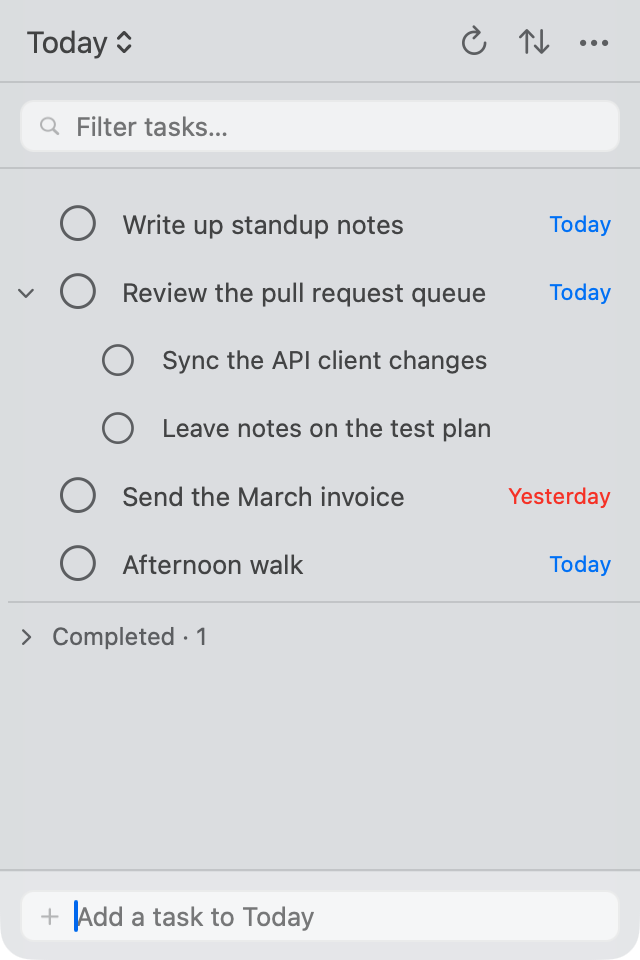
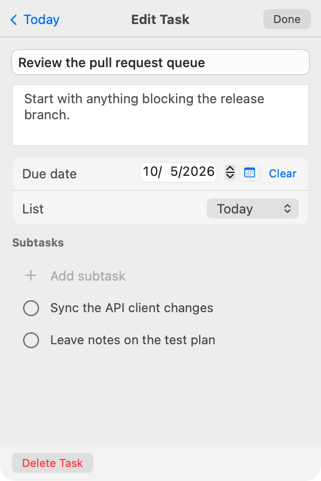

Your tasks.One click away.
Google Tasks, right in your Mac’s menu bar. Capture a thought, check what’s next, and get back to what you were doing.

Fits into your day.
Stays out of your way.
- Catch the thought while it’s fresh.
- Add a task right in the popover. Use ⌘ N to jump to quick add and ⌘ F to find something in your list.
- Your Google Tasks, at home on Mac.
- Sign in with Google and work with the lists you already use. Create, edit, and complete tasks from a native AppKit interface.
- Room for work and everything else.
- Switch lists, create a new one, or put two lists side by side. Move tasks between them as your plans change.
- Just a click in the menu bar.
- A compact popover, an optional pending-task count, and launch at login. Your Dock stays clear.
A task can hold
the whole plan.
Keep the next step and the useful details together. Open any task to make it a little more actionable.
- Break it into smaller steps.Add subtasks and check them off as you go.
- Give it a day.Pick a due date, sort by what’s due, and turn on local Mac reminders.
- Keep the context close.Write notes and move the task to the list where it belongs.

Your Google account.
Your Mac’s Keychain.
TaskMenu connects directly to Google for sign-in and task sync. Your sign-in tokens are stored in the macOS Keychain. There’s no TaskMenu account to create.
The app is free and open source under the GNU GPLv3. You can inspect the code, build it yourself, or help make it better.
Read the privacy policyMake room for a little focus.
Your next task is closer than another browser tab.
- Download the latest DMG from GitHub Releases.
- Open it and drag TaskMenu into Applications.
- Launch, sign in with Google, and find it in your menu bar.
Signed and notarized for macOS 14.4 or later. Want to try it first? Choose “Explore the Demo” in the app before signing in.
Prefer Homebrew?
brew trust --cask crazytan/tap/taskmenu
brew install --cask crazytan/tap/taskmenuOr follow the build instructions on GitHub.